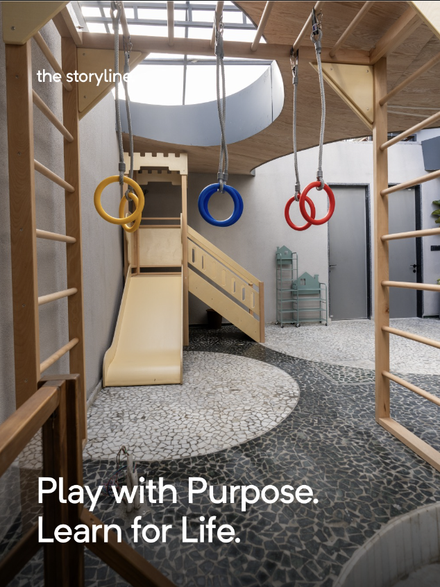

Practical Life
Pouring, folding, spooning, buttoning. Activities drawn from real domestic life that build fine motor control, concentration, and the pride of doing things independently.
In the Montessori tradition, the environment teaches. We prepare it carefully so children ages 1.5 to 3.5 can work independently, build concentration, and discover themselves as capable people.
Each area of the classroom addresses a different developmental need — none more important than another.
Pouring, folding, spooning, buttoning. Activities drawn from real domestic life that build fine motor control, concentration, and the pride of doing things independently.
Pink Tower, Brown Stair, Colour Tablets, Sound Boxes. Materials that isolate one quality at a time — size, weight, texture, pitch — and let children categorise the world through their senses.
Object-picture matching, sandpaper letters, story baskets, and rich vocabulary work. Children build the foundation for reading and writing through hands and ears before pen meets paper.
Explicit lessons in greeting, waiting, asking, and thanking. In a mixed-age class, grace and courtesy are practised daily — older children model it, younger ones absorb it.
The three-year age span is not incidental. Older children consolidate their learning by teaching. Younger children are stretched by what they observe. The classroom becomes self-sustaining in ways a single-age room never can be.
Three hours, no interruptions. Concentration is a muscle, and it develops slowly. Our daily work cycle protects the deep absorption that allows children to reach the end of a task — often the most important moment in the whole process.
Glass pitchers break if you drop them. Water spills if you pour carelessly. That is the point. Real materials give real feedback. A child who pours water with care and succeeds has genuinely mastered something. No plastic, no shortcuts.
Our lead guides have trained in the Association Montessori Internationale tradition. Presentations follow proven sequences. Observation is as important as instruction. We study each child individually before introducing new material.

Class Size
16
children max
Guides
2
per classroom
Work Cycle
3h
uninterrupted
Ages
1.5–3.5
mixed age group
Predictable structure gives children the safety to take risks within it. Every morning begins the same way — so children can focus on what to learn, not what comes next.
| Time | Activity |
|---|---|
| 8:00 – 8:20 | Arrival & Welcome Circle — children hang their bags, greet the guide, transition to work |
| 8:20 – 11:20 | Uninterrupted Work Cycle — individual and small-group Montessori work across all areas of the classroom |
| 11:20 – 11:40 | Outdoor Time — gross motor play in the outdoor area, weather permitting |
| 11:40 – 12:00 | Circle Time & Story — songs, language games, group story, social-grace exercises |
| 12:00 – 12:30 | Lunch & Practical Life — children set tables, serve themselves, eat together, and clean up |
| 12:30 – 1:00 | Rest / Quiet Work — some children rest; others may continue with quiet material |
| 1:00 | Dismissal — individual farewells; guides available briefly for parent questions |
Half-day option available (dismissal at 12:00). Extended day until 3:00 pm on request.
Simran Kaur
Founder & Lead Guide
AMI-informed Montessori educator with over a decade of experience in early childhood settings. Trained under mentors in Pune and Chennai before founding The Storyline in 2022.
Ananya Sharma
Montessori Guide
Specialises in language and sensorial development for toddlers. Ananya brings a quiet, observational presence to the classroom and a gift for knowing exactly when to step in — and when not to.
Ritu Nanda
Assistant Guide & Coordinator
Handles admissions, parent communication, and classroom support. Parents describe her as the person who makes the whole place feel held — warm, organised, and always one step ahead.
The best way to understand what we do is to see a morning in action. We offer 30-minute observation tours while children are at work — bring your questions.